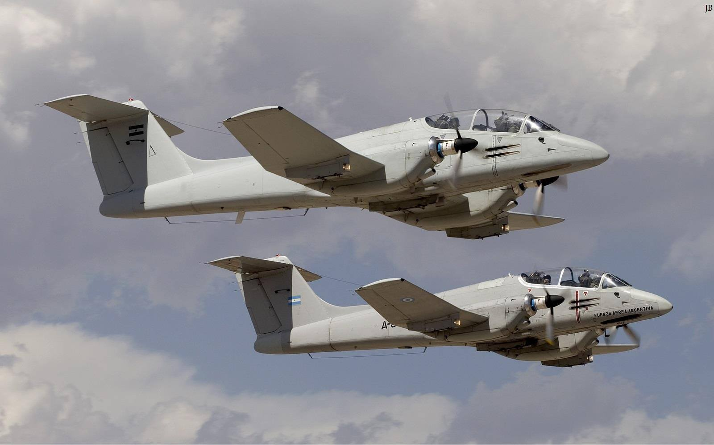
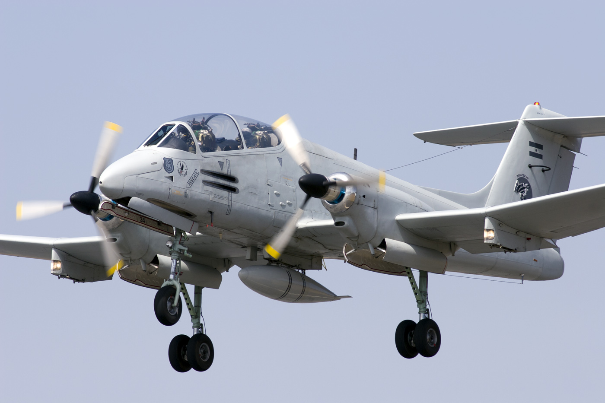
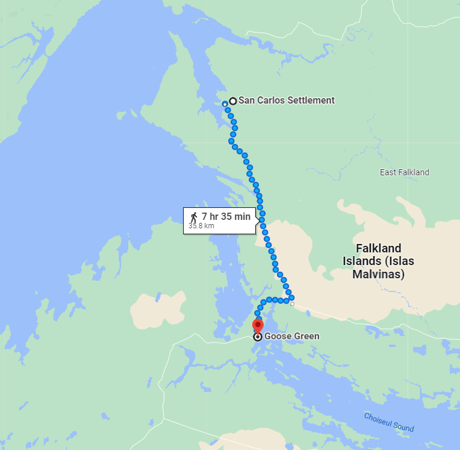
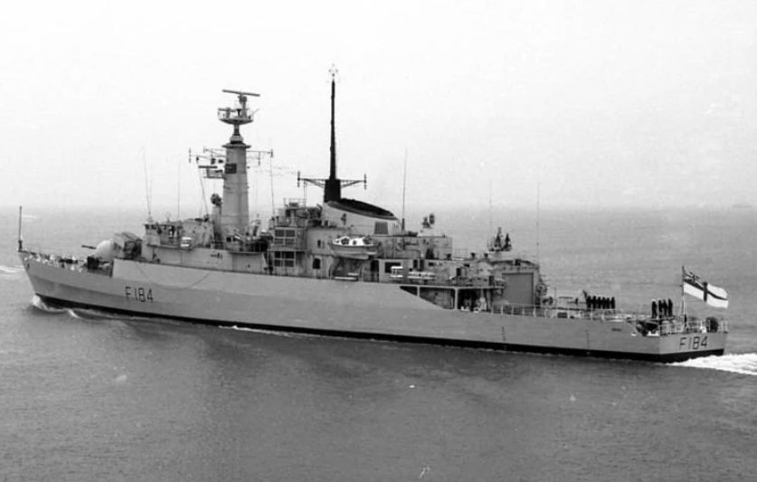
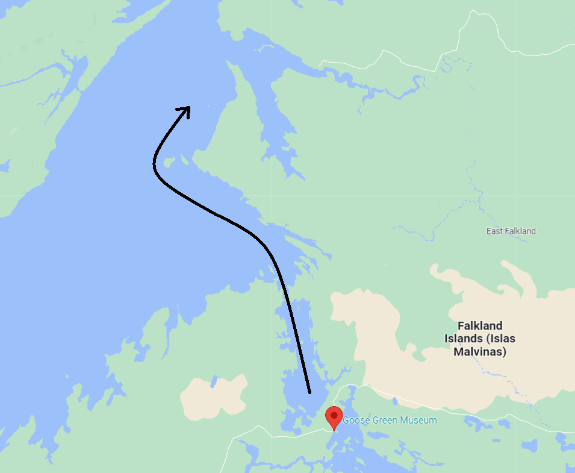
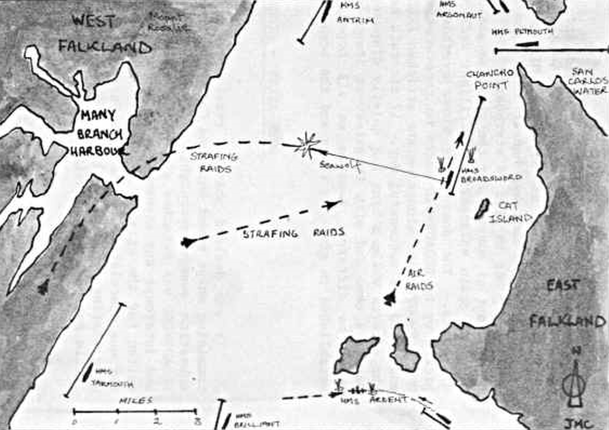
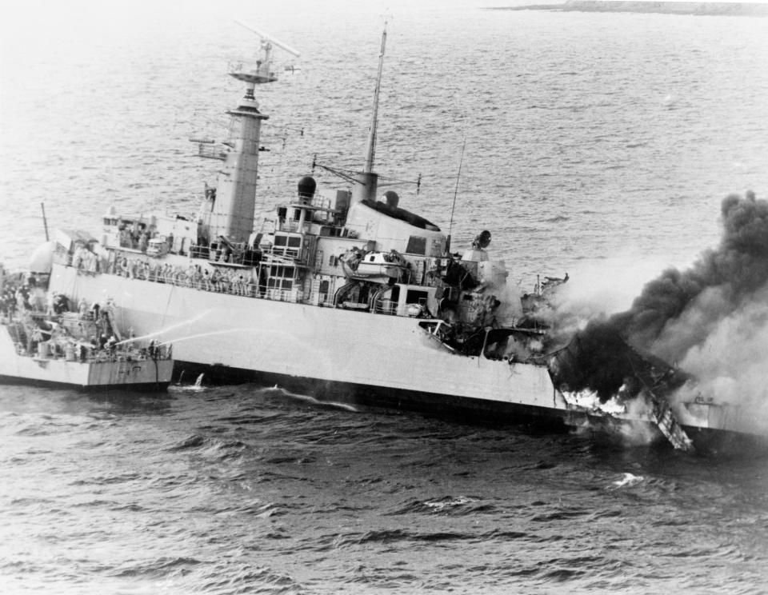
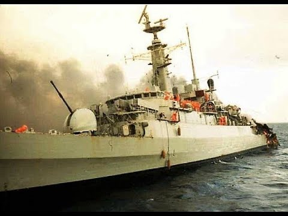
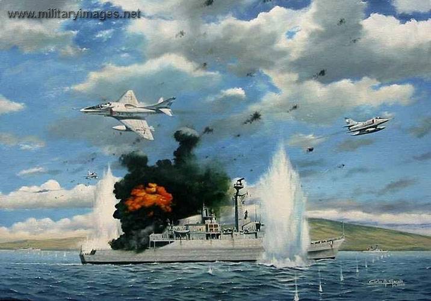

포클랜드 전쟁 잡담 - HMS Ardent의 고난
게시: 2022-04-07T06:30:09+09:00
<프로펠러 공격기들의 활약> 정찰 임무를 띠고 포트 스탠리에서 날아온 최초의 푸카라(Pucara) 쌍발 프로펠러 공격기가 격추된 지 15분 후, 3대의 푸카라가 더 날아옴. 이들은 약 35km 떨어진 구스그린(Goose Green) 지협의 임시 비행장으로부터 날아온 것. 즉각 영국 구축함들과 프리깃들이 대공포를 쏘며 응사했으나, 프로펠러 공격기의 느린 속도에도 불구하고 격추가 쉽지 않았음. 결국 이들 중 최초로 격추한 된 것은 이미 상륙해서 패닝 헤드 언덕 위에서 정찰 중이던 SAS 대원이 쏜 견착식 스팅어 미쓸에 의한 것. 조종사는 사출한 뒤 결국 어찌어찌 아르헨티나군으로 돌아감. 나머지 2대는 Sea Harrier들에 의해 요격됨. 한대는 편대장 Nigel “Sharkey” Ward 중령이 직접 공격했는데, 연약하고 느린 프로펠러 공격기라서 사이드와인더 대신 30mm 기관포로 공격. 그런데 의외로 딴딴! 뒤에서 덮치며 사격하여 푸카라 날개의 상하승강타(aileron)을 날려먹었는데도 계속 비행. 워드가 선회하여 다시 뒤에서 덮치며 또 기관포로 명중시켰는데 이번에는 오른쪽 엔진을 강타. 그런데도 계속 비행. 세번째로 다시 돌아 또 덮쳤는데 이번에는 왼쪽 엔진에서 불이 남. 그러고서야 비로소 추락. 워드 중령은 이 푸카라의 누군지 모를 조종사의 용기에 대해 극찬. 다른 한대도 해리어의 공격을 견디고 살아남아 부서진 기체를 끌고 구스 그린의 비행장으로 귀환. 근데 워드 중령이 격추시킨 조종사는 Juan Tomba 소령이었는데, 살아서 어찌어찌 원래 기지인 구스그린으로 돌아감. 근데 나중에 벌어진 구스그린 전투에서 포로가 됨. 처음에는 영어도 못하는 척 비협조적이었으나, '해리어 조종사들이 당신 용기에 대해 엄청 칭찬하더라'라는 소리를 듣고는 영국군을 위한 통역사로 맹활약.
 
<왜 구스그린 비행장을 냅뒀을까> 구스그린 비행장은 포장도 되어있지 않은 풀밭 활주로를 가진, 글자 그대로 그냥 airstrip. 푸카라 프로펠러 공격기인 푸카라 정도만 이착륙 가능. 그러나 분명히 푸카라 공격기도 좁은 산 카를로스 만 안에서 상륙작전을 벌이는 영국 해군에게는 큰 위협. 그런데 왜 이런 구스그린 비행장을 그대로 냅뒀을까? 실은 영국군에게는 여력이 없었음. 포트 스탠리 비행장조차 완전히 제압하지 못하는 상태에서 이런 외지고 누추한 airstrip을 공격하기 위해 귀한 해리어들을 출격시킬 수는 없었음. 대신 5월 21일, 어차피 포클랜드 해협과 산 카를로스 만의 좁은 해역에 영국 군함들이 잔뜩 밀고 들어간 마당에 몸 사릴 필요가 없다고 판단한 영국 해군은 상륙 당일인 5월 21일, 구스그린 지협의 좁디 좁은 만까지 프리깃함 HMS Ardent (3200톤, 32노트)를 보내 함포로 구스그린을 포격하게 함. 그러나 이건 결국 매우 나쁜 결정으로 드러남.
 
(HMS Ardent. 헬기 격납고 바로 위에 설치된 4연장 Sea Cat 미쓸 발사대에 주목. 일생에 도움이 안 되었던 미쓸임.)
<왜 니들이 그쪽에서 튀어나와?> 구스그린 비행장에 대한 포격 임무를 띠고 구스그린 만 안에 들어가 있던 HMS Ardent는 전형적인 대함/대잠수함 프리깃. 대함 미쓸인 엑조세 미쓸 발사관 4문과 대잠용 어뢰 발사관 2문을 갖추고 있었으나 대공 화기는 Oerlikon 20mm 기관포 2문과 장난감 같은 Sea Cat 대공 미쓸 4연장 1기 밖에 없었음. 물론 4.5-inch Mark 8 주포도 대공 사격은 가능. 구스그린으로 가던 HMS Ardent는 뜻밖에도 남쪽에서 날아온 A-4 Skyhawk 2대의 공격을 받고 깜놀. 본토에서 날아오는 아르헨티나 공군기들은 당연히 영국 군함 공격에 용이한 항로인 섬의 북쪽에서 아래로 진입하리라 생각했는데, 의외로 적지 않은 아르헨티나 공군기들이 섬의 남쪽에서 북쪽으로 공격 방향을 잡은 것. 이는 아무 것도 없는 대양 위에서의 항법 훈련이 부족했던 아르헨티나 공군기들이 먼저 포클랜드 섬을 찾는 것도 힘들었고, 찾는다고 해도 어디가 어디인지 구분하기가 어려웠으므로 눈에 잘 띄는 지형인 동섬과 서섬을 나누는 해협인 포클랜드 해협을 눈으로 보고 산 카를로스 만의 위치를 찾았기 때문에 벌어진 일. 그렇게 날아오던 아르헨티나 A-4들은 어디가 산 카를로스고 어디가 구스그린인지 구분할 여유가 없었고 그냥 처음 눈에 띈 군함을 무조건 공격. 그게 바로 HMS 아던트. A-4들은 폭탄 2발을 투하했으나 빗맞았고 그나마 불발. 일반적으로 근처에만 떨어져도 수중에서 폭발한 500파운드 폭탄은 얇은 껍질을 가진 구축함이나 프리깃함에는 꽤 큰 피해를 주는데 다행한 일. 물론 이는 너무 낮은 고도에서 폭탄이 투하되었기 때문에 퓨즈가 무장 위치까지 내려가지 못해서 발생한 일. 그런데 예상과는 달리 남쪽에서 계속 아르헨티나 전투기들이 날아오자 영국 함대는 아던트에게 '남쪽으로부터의 공격을 분산 시키기 위해' 구스그린 만에서 빠져나와 북서쪽 포클랜드 해협으로 이동하라고 지시. 그렇게 포클랜드 해협으로 빠져나온 아던트는 또다시 남쪽에서 날아오던 아르헨티나 전투기 4대와 맞닥뜨림.
 
(지도 맨 아래쪽에 몸부림치는 HMS Ardent가 보임)
<HMS Ardent의 고난> 남쪽에서 나타난 전투기는 이스라엘제 미라쥬인 IAI Dagger 4대. 이들이 아던트를 덮치기 전에 영국 해리어 전투기들이 뛰어들어 사이드와인더로 1대를 격추. 그러자 나머지 3대는 공격을 포기하고 도주. 그러나 다시 3대의 스카이호크가 나타남. 이들은 해리어의 공격을 받기 전에 아던트를 덮침. 아던트는 스카이호크를 공격하려 했으나 장난감 같은 Sea Cat은 아예 조준이 안되어 발사도 못했고, 때마침 북쪽으로 항진 중이던 아던트의 이물 쪽에 붙은 4.5인치 주포는 남쪽, 그러니까 좌현 훨씬 뒤쪽의 사각(死角)으로 날아오는 스카이호크에게 포구를 돌리지 못함. 결국 응사 가능한 것은 좌현의 20mm 오리콘포 1문 뿐. 비록 느리지만 그래도 제트기인 스카이호크 3대에게는 그런 20mm 기관포는 별 위협이 되지 못했고, 이들은 아던트에게 3발의 500파운드짜리 폭탄을 명중시킴. 2발은 아던트의 고물쪽에 있던 Westland Lynx 헬리콥터 격납고에서 폭발하여 링스 헬기를 폭파하고 그 격납고 위에 설치되었던 Sea Cat 미쓸 발사대를 하늘 높이 솟구치게 함. 아무 짝에도 도움이 안 되던 Sea Cat 미쓸은 하늘로 솟구쳤다가 갑판에 떨어지며 2차 가해. 3번째 폭탄은 다행히 폭발하지는 않았으나 마치 철퇴처럼 기계실 문짝을 부수고 들어가 전기 스위치를 박살냄. 덕분에 주포를 비롯한 여러 장비들이 먹통이 됨. 폭탄을 투하한 3대의 스카이호크는 모두 뒤늦게 해리어의 요격을 받고 격추되거나 파손된 상태로 돌아가다 해상 불시착.

(헬기 격납고가 날아가고 그 위에 있던 Sea Cat 미쓸 발사대도 어디론가...)
<HMS Ardent의 최후> 이 공격으로 아던트는 사실상 무방비 상태가 되었으나 그래도 자력 항행은 가능. 영국 함대 사령부는 아던트에게 '일단 산 카를로스 포트(San Carlos Port)로 이동하라'는 명령을 내림. 그러나 거기로 가는 중이던 18:00시, 이번에는 남쪽에서 날아오던 스카이호크 5대와 맞닥뜨림. 화재가 발생한 상태인 아던트는 이미 전술적 목표물이 아니었으나 미숙하기는 아르헨티나 조종사들도 마찬가지라서 이들은 그냥 눈에 띄는 첫번째 군함인 아던트에게 달려듬. 2발 정도의 폭탄은 고물 좌현 쪽에서 폭발했고 숫자 미상의 폭탄이 함체를 뚫고 들어왔으나 다행히 불발. 그러나 몇 발의 다른 폭탄은 아던트 바로 옆의 바닷물 속에서 폭발. 이것이 명중탄보다 심한 손상을 줌. 얇은 함체가 폭발로 인해 발생한 거센 수압에 우그러져 물이 새기 시작한 것. 화재가 걷잡을 수 없이 번지고 침수로 인해 배가 기울기 시작하자 함장 Alan West는 결국 배를 버리라는 명령을 내림. 22명 사망. 아던트는 밤새도록 불타며 이따금 폭발을 일으켰는데 결국 다음날 아침 06:30에 침몰.
 